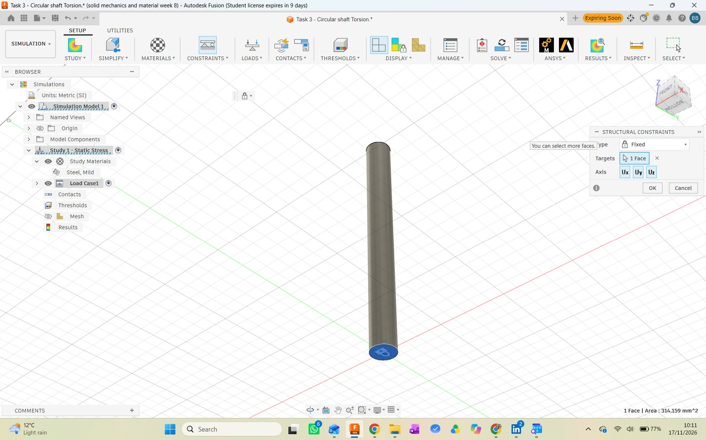
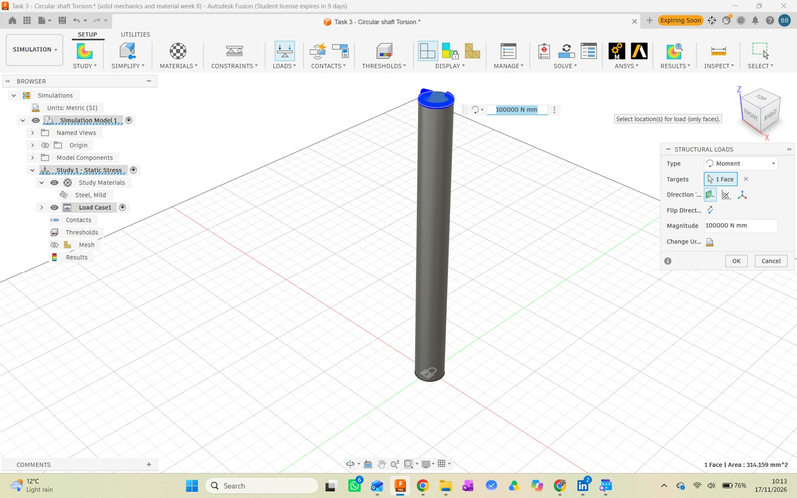
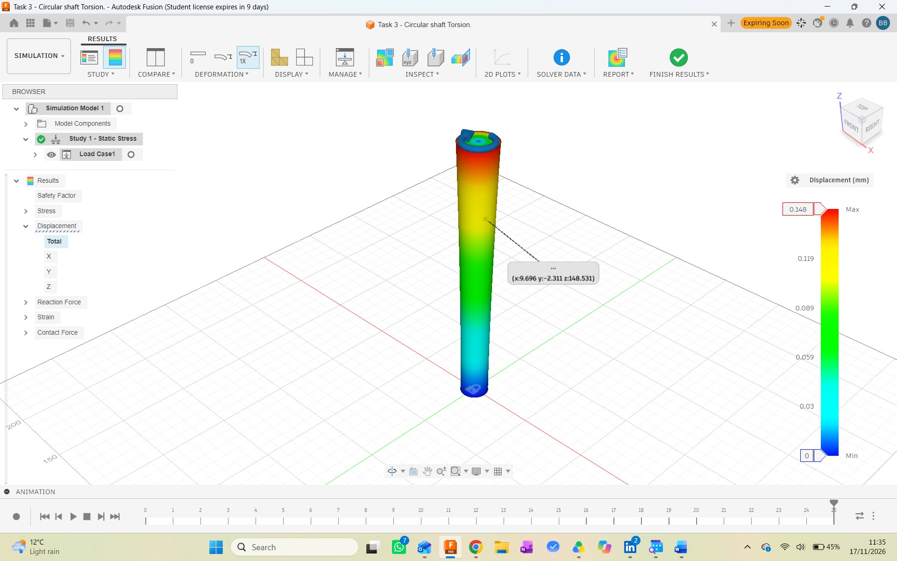
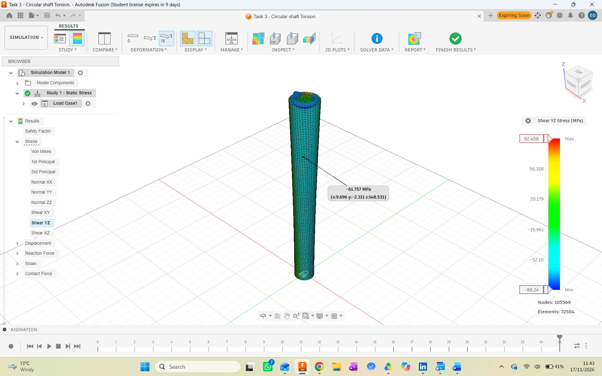

Circular Shaft Torsion Analysis
I modelled a solid mild-steel shaft in Fusion 360 to see how closely it followed torsion theory. I compared shear stress at a fixed probe position, checked the effect of mesh refinement, and varied the shaft diameter to see how much the free end twisted.
Model and analysis setup
Geometry and material
- Solid circular shaft, 200 mm long with a baseline diameter of 20 mm
- Fusion mild steel with Young’s modulus of 220 GPa and Poisson’s ratio of 0.275
- Diameter study covering 18, 20, 22 and 24 mm at the same length and torque
Boundary conditions and mesh
- Fixed face at z = 0 mm, with all three translations restrained
- 100 N·m axial moment at z = 200 mm, with gravity disabled
- Four mesh sizes from 5.00 to 1.75 mm, with a 2.50 mm mesh for the diameter comparison
Results and mechanical interpretation
Shear stress at the probe
I compared the same shear component at the same position in both models. At x = 9.696 mm, torsion theory gave 61.727 MPa and Fusion gave 61.757 MPa, a difference of 0.049%. Refining the mesh from 2.50 mm to 1.75 mm changed the probe result by 0.026%.
Twist and shaft diameter
For the 20 mm shaft, I divided the free-end displacement by the 10 mm radius to estimate twist. This gave 0.148 ÷ 10 = 0.0148 rad ≈ 0.848°. Using the Fusion material properties, the theoretical twist was 0.846°.
At the same torque, the 18 mm shaft twisted by an estimated 1.292° and the 24 mm shaft by 0.411°. A solid shaft’s polar second moment of area grows with the fourth power of diameter, so even a modest diameter increase substantially reduces twist.
Fusion 360 evidence



